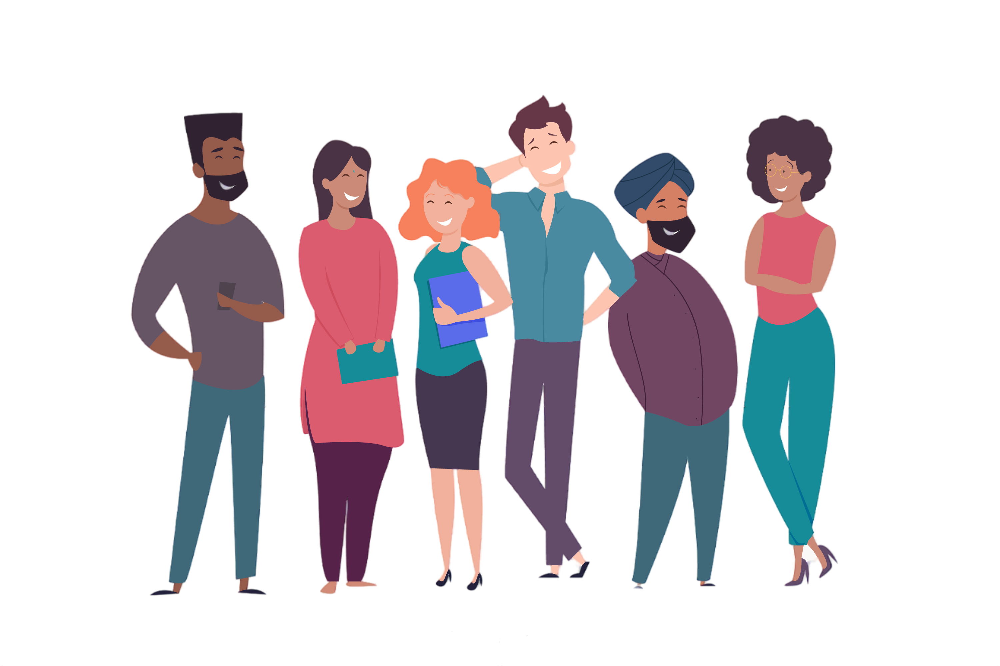

Bem-vindo ao GreenImpact: Onde Pequenas Ações Causam Grandes Mudanças GreenImpact é mais do que apenas um site - é um chamado à ação para todos que desejam fazer a diferença em nosso planeta. Nossa plataforma oferece uma variedade de campanhas ambientais, recursos educacionais e uma comunidade vibrante, tudo projetado para inspirar e capacitar indivíduos a promover mudanças positivas para o meio ambiente. Junte-se a nós enquanto trabalhamos juntos para criar um futuro mais verde e sustentável para todos.